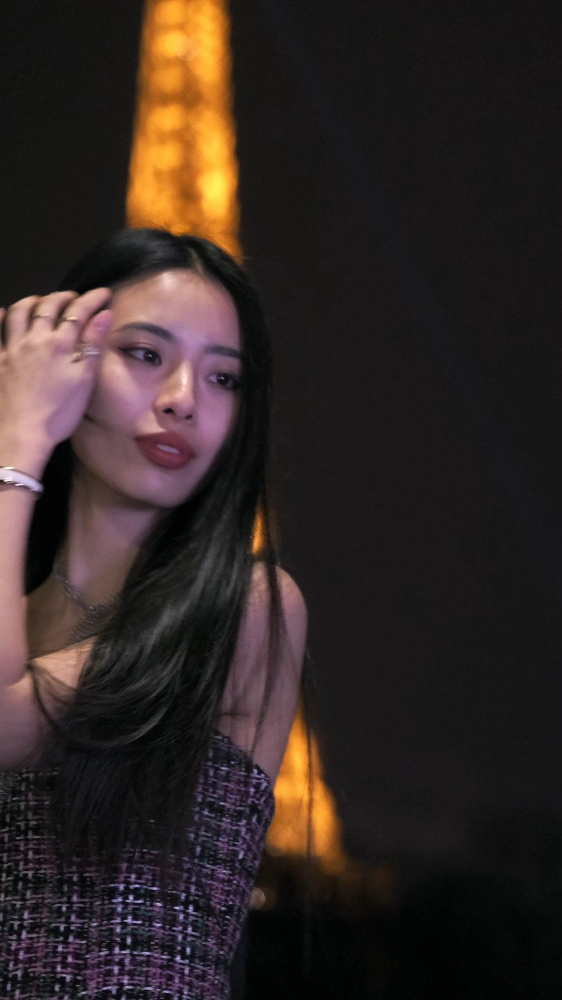
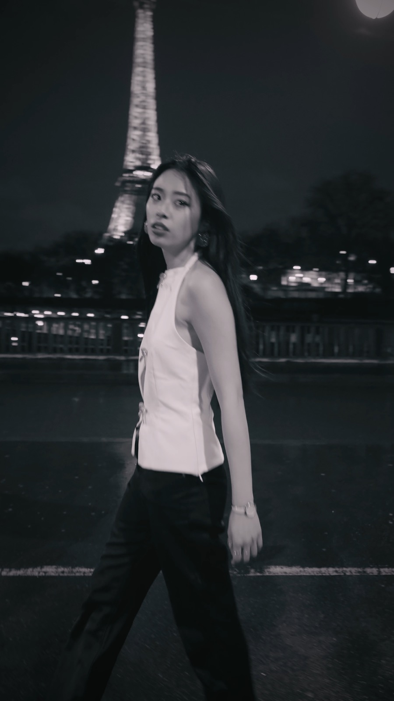
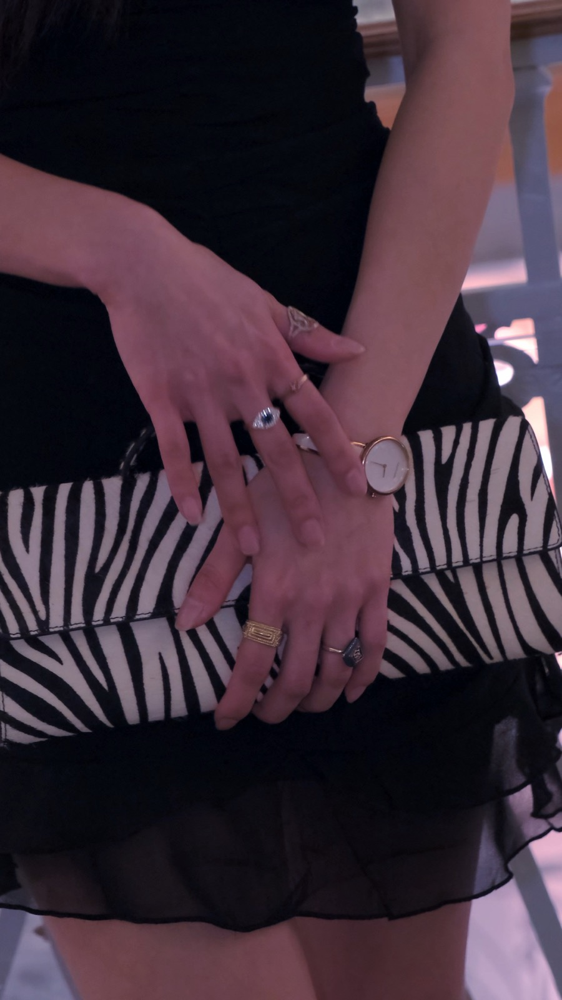

Publicité & réseaux sociaux · Yen · Créatrice de contenu
« Instant Parisien » : développer l'audience d'une créatrice et séduire les marques
Un film court à l'esthétique éditoriale tourné de nuit dans Paris pour générer des vues, développer l'audience et attirer l'attention de marques partenaires.
- Client
- Yen · Créatrice de contenu
- Secteur
- Influence, mode & lifestyle
- Livrables
- Film court vertical 4K (Reels / TikTok) + déclinaisons visuelles
- Année · Durée
- 2025 · Livraison selon les deadlines client
Résultats obtenus
- +48%de portée organique sur Reels & TikTok
- +1 300nouveaux abonnés qualifiés
- 3xplus de prises de contact de marques
- 4K 9:16qualité éditoriale native mobile
01 — Contexte
Le contexte & les enjeux
Pour franchir un cap sur les réseaux sociaux, cette influenceuse souhaitait sortir des contenus filmés au smartphone et proposer une courte vidéo à l'esthétique magazine. Le double objectif était clair : maximiser les vues pour élargir son audience, tout en démontrant aux marques de mode, de joaillerie et de lifestyle sa capacité à incarner un univers haut de gamme.
02 — Attentes
Ce que le client attendait
- Augmenter l'audience et générer un fort volume de vues organiques sur Instagram Reels et TikTok
- Attirer l'attention de marques potentielles (mode, accessoires, horlogerie, joaillerie) pour décrocher des partenariats
- Sublimer la créatrice ainsi que les pièces portées (bijoux, montre, pochette, silhouettes) dans un décor parisien iconique
- Se démarquer immédiatement dans le flux grâce à une image et un montage dignes d'une campagne de marque
03 — Contraintes
Les contraintes du projet
- Tournage nocturne en extérieur face à la Tour Eiffel et dans le métro parisien avec très peu de lumière ambiante
- Capter l'attention dès les 2 premières secondes pour maximiser le taux de complétion sur les algorithmes
- Équilibre subtil entre plans larges d'atmosphère parisienne et plans rapprochés valorisant les détails (bagues, montre, matières)
- Équipe légère et agile pour tourner rapidement dans plusieurs lieux emblématiques de Paris
04 — Propositions
Les pistes que nous avons proposées
-
Une vidéo « Get Ready With Me » en intérieur
Un format face caméra classique montrant la préparation de la tenue : familier mais moins différenciant auprès des marques premium.
-
Un lookbook statique en journée
Une succession de poses mode en plein jour, esthétique mais manquant de tension narrative et de cinéma.
-
« Instant Parisien » : une errance nocturne cinématographique Piste retenue
Une capsule visuelle rythmée alternant couleur et noir & blanc, mêlant l'énergie du métro parisien, l'élégance des détails bijoux/accessoires et la magie de la Tour Eiffel illuminée.
05 — Solution
La solution retenue
La piste « Instant Parisien » a été retenue pour son fort pouvoir d'attraction : elle fonctionne à la fois comme un contenu viral à forte rétention et comme une véritable carte de visite auprès des directeurs artistiques de marques. Le jeu de contrastes entre le noir et blanc intemporel et l'or de la Tour Eiffel donne immédiatement une signature visuelle mémorable.
06 — Production
Tournage & montage
Tournage
Tournage de nuit dans Paris (abords de la Tour Eiffel, quais et station de métro) avec caméras et optiques professionnelles lumineuses en 4K verticale.
Montage
Montage dynamique calé sur la musique, alternance artistique couleur / noir & blanc, étalonnage soigné mettant en valeur les teintes chair et l'éclat des bijoux.
Équipe
Réalisateur-cadreur et monteur-étalonneur dédiés.
07 — Résultat
Le résultat




Cette vidéo a complètement changé la perception de mon profil : au-delà des vues et des nouveaux abonnés, plusieurs marques m'ont contactée directement après l'avoir vue.

Et si le prochain cas client, c'était le vôtre ?
Parlez-nous de vos enjeux. Nous revenons vers vous avec des idées concrètes, pas avec un devis générique.